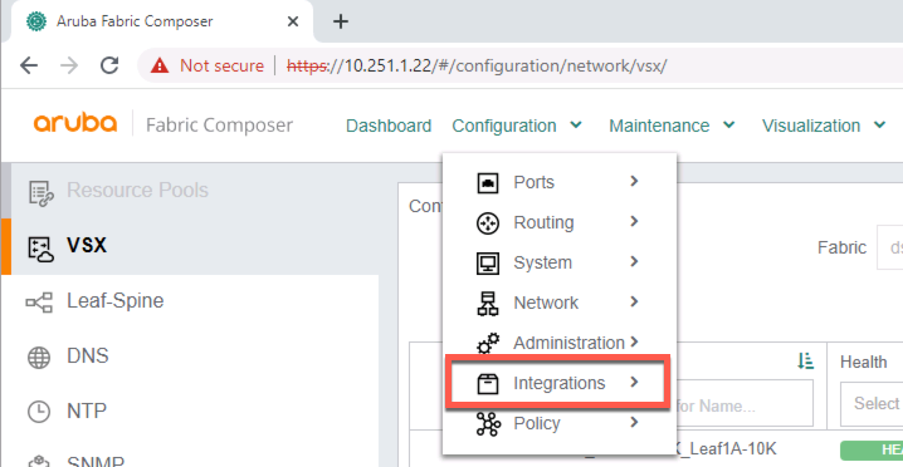
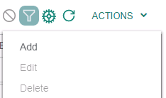
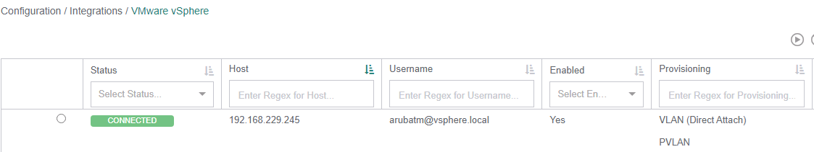
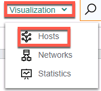
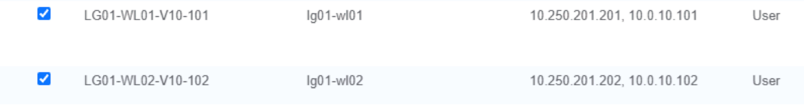
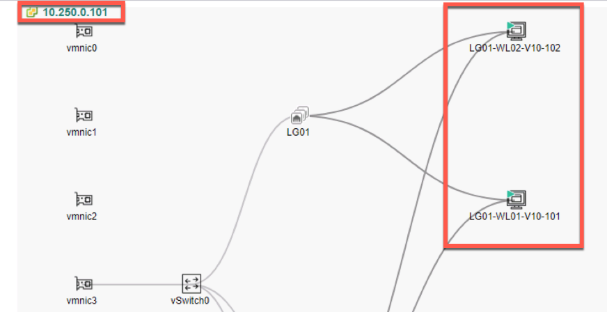

Confidential | For Training Purposes Only
Lab 4 - AFC Integrations#
Lab Overview#
Lab time: 40 minutes
The AFC is a powerful platform for managing a Data Center Switching Fabric. It was designed to not only manage and integrate with HPE Aruba Data Center products, but also with 3rd party platforms such as VMware vSphere, Nutanix, AMD Pensando, and much more.
In this lab, we are going to use the Aruba Fabric Composer (AFC) to build the following integrations:
Integrate with vSphere
Integrate with AMD Pensando Policy and Services Manager (PSM)
Lab 4.1 - Integrate vSphere#
Description#
Using the AFC we will add an integration with VMware vSphere. This integration provides …
Validate#
Open the AFC, click the Configuration menu, and select Integrations > VMware vSphere

Fig. Lab 4 Integrations Menu
Using the ACTIONS menu, select Add.

Fig. Lab 4 Add Integration
Add the vSphere integration by entering the following information in the form:
Step 1 - Host |
|
Name |
dsf-vsphere |
Description |
vSphere Cluster |
Host |
|
Username |
|
Password |
|
Click VALIDATE and NEXT |
Step 2 - Aruba Fabric |
|
Automate VLAN provisioning for ESX hosts directly connected to the fabric |
YES |
Automate VLAN provisioning for ESX hosts connected through intermediate … |
NO |
Automated PVLAN provisioning for ESX hosts directly connected to the fabric … |
YES |
Automated Endpoint Group Provisioning * |
YES |
Click NEXT |
Step 3 - vSphere |
|
Discovery Protocols |
YES |
Click NEXT |
Step 4 - Summary |
|
Review the summary and then Click APPLY |
Expected Results#
Verify that the integration is successfully connected as shown in the following screenshot.

Fig. Lab 4 Connected vSphere
Lab 4.2 - AFC Host Visualization#
Description#
Once vSphere is integrated with AFC, AFC will use RESTful APIs to poll vSphere to gather an inventory of hosts, VMs, Networks, etc. We will explore the AFC Host Visualization in this lab.
Validate#
Open the AFC, click the Visualization menu, and select Hosts

Fig. Lab 4 Visualizations Menu
At the bottom of the page go to the VM list (Click VMS) find and select your lab-groups workload servers. LG[LG]WL01-v10-101 and LG[LG]-WL02-v10-102.
Note
You may have to expand the lower part of the screen to access this list. In this example, LG01 VM’s are selected.

Fig. Lab 4 VM Workload List
Note
AFC Host Visualization defaults to Lab Group 01. Be sure to select your lab to see your diagram. Your lab will be 10.250.0.1LG, where LG is your Lab Group Number. You may have to expand the lower part of the screen to access the list. LG01 VM’s are selected in this example

Fig. Lab 4 Host Visualization
Expected Results#
Verify that the host address matches the one connected to your switches. Use the following table as reference.
Lab Group |
vSphere Host |
Lab Group |
vSphere Host |
|---|---|---|---|
01 |
10.250.0.101 |
06 |
10.250.0.106 |
02 |
10.250.0.102 |
07 |
10.250.0.107 |
03 |
10.250.0.103 |
08 |
10.250.0.108 |
04 |
10.250.0.104 |
09 |
10.250.0.109 |
05 |
10.250.0.105 |
10 |
10.250.0.110 |
Note
Verify you see the physical connections to your leaf group. If you do not see the connections, the ports may be down on the switches. You can use show interface brief on the command line of the switch and look for port 1/1/1 on each switch.
Lab 4.3 - Integrate PSM#
Description#
Using the AFC we will now add an integration with the AMD Pensando Policy and Services Manager (PSM). PSM provides centralized management and visibility of all stateful services running in the infrastructure. AFC acts as an abstraction layer for some of the PSM stateful functions.
Validate#
Open the AFC, click the Configuration menu, and select Integrations > Pensando PSM
Fig. Lab 4 Integrations Menu
Use the ACTIONS menu to select Add
Fig. Lab 4 Add Integration
Add the Pensando PSM Integration by entering the following information in the form:
Step 1 - Host |
|
Name |
dsf-psm |
Description |
Policy and Services Manager |
Host |
|
Username |
|
Password |
|
Click VALIDATE and NEXT |
Step 2 - Settings |
|
Fabric |
dsf |
Enable auto decommissioning for switches deleted from the system |
YES |
Enable auto VLAN placement on all switches when creating a Network |
YES |
VMware vCenters |
Select the vSphere server |
NEXT |
Step 4 - Summary |
|
Review the summary and then Click APPLY |
Expected Results#
Verify that the integration is successfully connected and HEALTHY as shown in the following screenshot.

Fig. Lab 4 Connected PSM
Note
If the health is not green, wait a few moments and refresh the page.
Lab 4.4 - Access PSM#
Description#
We will log into the PSM to verify that the the AFC integration was successful. AFC should have added the two CX 10000 Switches (also called Distributed Services Switch or DSS) to the PSM.
Validate#
Using the web browser in your RDP client, open the PSM using the following URL and credentials:
URL: https://10.250.2LG.31
Username: admin
Password: Pensando0$

Fig. Lab 4 PSM Login
Expected Results#
Once logged into the PSM, navigate to System > DSS and verify that the CX 10000 Switches are in the healthy state.

Fig. Lab 4 DSS Overview
Lab 4 Summary#
During this lab, we added third party integrations to the Aruba Fabric Composer
We added an integration to vSphere from AFC
We verified the integration, by using the Host Visualization feature in the AFC
We added an integration with the AMD Policy and Services Manager
We accessed the PSM to verify that the integration was successful and that both CX 10000 switches were added by AFC to PSM